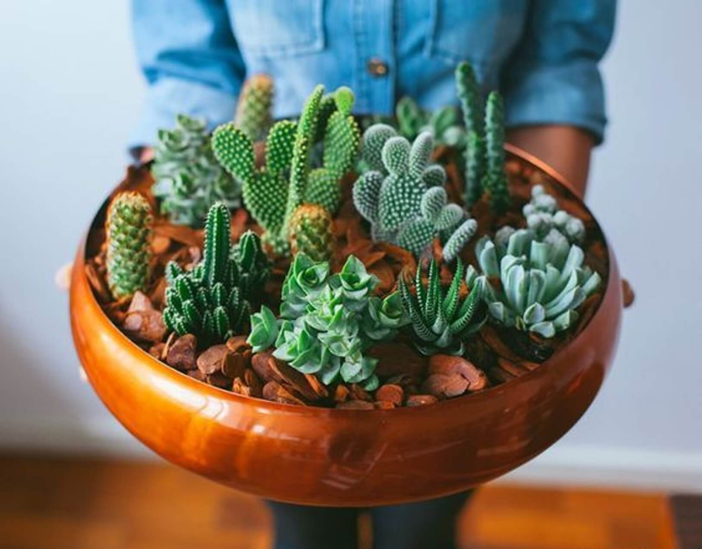

Cactus site
A cactus (plural cacti, cactuses, or less commonly, cactus) is a member of the plant family Cactaceae, a family comprising about 127 genera with some 1750 known species of the order Caryophyllales. The word "cactus" derives, through Latin, from the Ancient Greek κάκτος, kaktos, a name originally used by Theophrastus for a spiny plant whose identity is now not certain.
Cool things about cactus
- Cactus originates from the Greek name Kaktos. Kaktos is a Spanish artichoke or the “prickly plant of Sicily” as many refer to it in Greece.
- Cacti are Musical - At least their spines. The largest specimens were previously used as gramophone needles.
Onde estamos
Estamos em qualquer lugar, basta nos procurar